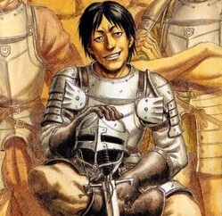

Berserk
Argumento

La historia está ambientada en una época con tintes de la Europa medieval y renacentista, en la cual se cuenta la vida de Guts (cuyo nombre fue traducido como Gatsu en las primeras ediciones en castellano), un mercenario huérfano que acompañado del elfo Puck, caza seres demoníacos llamados apóstoles. La historia se divide en dos partes: la primera (que va del volumen 4 al volumen 13) relata su niñez y juventud hasta cómo conoce a Griffith, líder de un grupo mercenario llamado la «Banda del Halcón». La segunda parte (volúmenes del 1 al 3 y 14 al 39, publicándose) muestra su historia tras el fatídico Eclipse, la caza de los apóstoles y su búsqueda de venganza contra Griffith.
¡PUEDE HABER SPOILERS DENTRO!
Personajes
-

Guts
Guts es un hombre complejo y polifacético, cuya personalidad ha ido cambiando cada vez más y más a raíz de los muchos acontecimientos de su vida. Cuando era un niño se caracterizaba por su constante dedicación a agradar y ganarse el amor de Gambino, su maestro en las artes de ser mercenario, a quien veía como un padre (aunque dicha empatía no era mutua), lo que le permitía no perder la cordura pese a haberse criado en el campo de batalla y de haber cometido su primer asesinato con tan solo 7 años. Cuando Guts se enteró de que Gambino había sido el responsable de la violación que había sufrido a manos de uno de sus hombres de confianza, esta empatía se convirtió en desesperación y angustia, lo que hizo que, tras la muerte de Gambino (a quien él mismo mató en defensa propia) Guts pasase su adolescencia como un mercenario apático, solitario y sin ningún aprecio por su propia vida, así como una fuerte fobia a ser tocado como resultado de haber sido asaltado sexualmente. Cuando se unió a la Banda del Halcón, a pesar a que en un principio trataba de mantener las distancias con los demás miembros, el paso del tiempo hizo que Guts desarrollase fuertes lazos con sus compañeros de batalla, especialmente con Judeau, Pippin, Corkus, Rickert y, sobre todo, con Griffith, a quien llegó a considerar su mejor amigo, y con Casca, con quien no paraba de discutir, aunque en el fondo estaban enamorados el uno del otro. Estos sentimientos, nuevos para Guts, confundieron al mercenario, haciéndole sentirse vacío y perdido, lo que hizo que se marchase de la banda durante un año (provocando su declive sin saberlo). Tras enterarse de que sus antiguos compañeros estaban en peligro, y de que Griffith llevaba un año encarcelado, Guts decidió regresar a la banda, donde la mayoría de miembros le recibieron, pese a todo, con cariño (salvo excepciones como la de Corkus y Casca). Tras un conflicto con Casca en el que esta se intentó suicidar, siendo rescatada por Guts, los sentimientos del uno por el otro salieron a flote y terminaron manteniendo relaciones sexuales (lo cual hizo que Casca quedase embarazada de Guts), acto durante el cual Guts superó sus traumas del pasado y terminó comprendiendo que su lugar había estado en todo momento junto a la Banda del Halcón, y más especialmente, junto a Casca. Durante un breve periodo de tiempo, tras el rescate de Griffith, se mostró a un Guts especialmente protector y afectivo con sus compañeros, quienes, dado el lamentable estado de salud de Griffith y su inquebrantable confianza en Guts, deseaban convertir a éste en su nuevo líder. Tras el eclipse, que transcurrió con la traición de Griffith, la masacre a todos sus amigos y la violación y pérdida de memoria de Casca, quien dio a luz a un hijo deforme y endemoniado, Guts volvió a sufrir un nuevo trauma y un nuevo cambio radical en su personalidad, mostrándose durante la cacería de apóstoles como un hombre especialmente cruel, despiadado, sarcástico y brutal, llegando con tal de cumplir sus objetivos a límites tales como tener relaciones sexuales con una apóstol para dejarla desprevenida y asesinarla con facilidad o sacrificar vidas de inocentes si es necesario con tal de ganar un combate. A menudo se le veía disfrutar al torturar a sus enemigos o al imaginarse cómo los destruiría, lo que posiblemente indique que también había desarrollado un rasgo muy sádico. También daba señales de ser bastante realista e insensible, como demostró al proponer a Theresia suicidarse mientras esta le reprochaba el haber matado a su padre, o al dar abiertamente su punto de vista a Jill o a Farnese sin importarle en absoluto que ello pudiese dañar sus sentimientos u ofenderlas. Esta brutalidad, que al principio era constantemente condenada por Puck, era en realidad una fachada, ya que pese a todo, Guts sufría y seguía sintiendo empatía, como se vio cuando al dar la espalda a Theresia se entristeció al verla llorando, cuando se negó a que Jill le acompañase para que no sufriera o cuando Casca escapó de la casa de Godo. Durante su viaje a la isla de los elfos, Guts de nuevo volvió a evolucionar en alguien más cálido y agradable gracias a la compañía de sus nuevos amigos, tal y como hicieron los miembros de la Banda del Halcón en el pasado. Aun así, la mera existencia de la Bestia de la Oscuridad (una parte de la personalidad de Guts con la apariencia de un perro negro nacida a partir del odio y la sed de sangre de Guts tras el eclipse) morando el alma de Guts y su manifestación cuando éste emplea la armadura Berserker indican que, aún con todo, Guts sigue siendo una persona llena de odio, rencor y deseos oscuros (como cuando dicha bestia intentó tentar a Guts de violar y matar a Casca con tal de satisfacer toda su ira reprimida). Por otra parte, hay rasgos de la personalidad de Guts que se han mantenido constantes, como su inquebrantable fuerza de voluntad, su valentía sin límites, su astucia o su gran tolerancia al dolor físico.
-

Griffith
Griffith es la figura antagonista de Guts así como su mejor amigo durante un tiempo. Fue el fundador y líder de la unidad de mercenarios conocido como la Banda del Halcón. Extraordinariamente carismático e inteligente, su habilidad con el sable y la táctica le otorgan a él y a su banda una cierta reputación de invencibilidad. Tras ser severamente torturado durante un año mientras que su banda era perseguida y mermada después de que fuera descubierto teniendo sexo con la princesa Charlotte, pierde toda oportunidad de lograr sus ambiciones y en un momento de desesperación, usa el Beherit carmesí, con el que fue predestinado desde temprana edad al serle entregado por una adivina que lo llamó el «Huevo del Rey», para invocar a la Mano de Dios y sacrificar a sus compañeros con tal de lograr su plan de tener su propio reino y alcanzar sus sueños. Tras el eclipse fue renombrado Femto por la Mano de Dios. Unos años más tarde al obtener un nuevo cuerpo tras la Ceremonia de Encarnación, Griffith logra volver al mundo material y formar una nueva Banda del Halcón, contando con poderosos apóstoles entre sus filas que le siguen fielmente. En la saga del Halcón Milenario junto a ellos defiende la ciudad de Vritannis de la invasión del imperio Kushan. Tras derrotar a Ganishka en la forma que Daiba denomina "Shiva", termina instaurando su propio reino llamado Falconia, donde recibe a todas las personas que logran escapar del caos mundial tras la liberación del plano astral, hecho conocido como la "Trasformación del Mundo".
-
Casca
Es la única componente femenina en la banda original del Halcón y su habilidad con la espada está solo por detrás de Griffith y Guts. Casca se une a la Banda del Halcón después de que Griffith la ayudase para salvarse de un asalto sexual por parte de un noble. Durante los acontecimientos de la Edad de Oro, Casca mantiene una relación amor-odio con Guts, además de su evidente admiración y deseo hacia Griffith, el cual nunca la corresponde de similar modo. Durante el eclipse es violada por Griffith transformado en Femto. Debido al severo trauma que le produjo esto, termina perdiendo la memoria y la capacidad para hablar. Casca es el pilar a tierra de Guts para que él no vuelva a sólo buscar venganza sin control. El Caballero de la Calavera dijo a Guts que su estado mental se podría curar en la isla de los elfos, Elfhelm.
-
Judeau
Fue miembro de la Banda del Halcón y antiguo artista de circo, hecho que explica su destreza en el lanzamiento de cuchillos. Fue uno de los combatientes más valiosos de Griffith, pero su mayor don provenía de su capacidad para leer las emociones de otras personas, como en el caso en el que fue el primero en notar el vínculo creciente entre Guts y Casca, incluso antes de que los dos se llevasen bien. Tranquilo, alegre y práctico, Judeau era a menudo la voz de la razón en el trato con la Banda dl Halcón más volátiles, como Corkus. Su personalidad también se define como noble y generosa al habitualmente estimar a sus compañeros por encima de él, mostrándose a gusto con la comprensión de los asuntos sentimentales y preguntando las verdaderas intenciones de quienes lo rodean. Judeau mismo admitió que era bastante bueno en muchas cosas pero no era un genio en ningún campo en particular. Murió asesinado por un apóstol durante el eclipse, sacrificándose por Casca con el fin de mantenerla con vida. Sus últimos pensamientos parecen dar a entender que estaba secretamente enamorado de ella.
-
Pippin
Fue un hombre que manejaba una enorme maza. Era minero antes de unirse a la antigua Banda del Halcón, y sus reacciones rápidas y colosal fuerza han servido para salvar el pellejo de los mercenarios de dicha banda en muchas ocasiones. A pesar de su enorme estatura física, Pippin demuestra ser una persona amable y paciente, como se muestra cuando se mantiene perpetuamente inmutable incluso cuando Guts le golpeó en la cara y le hizo sangrar. Se le asocia a menudo con Rickert, que parecen compartir una relación de hermanos. Durante el eclipse, se mantuvo alejado del grupo luchando contra varios apóstoles para ganar tiempo mientras que Casca y Judeau trataban de escapar. Pippin murió en aquel encuentro, quedando su cuerpo hueco y usado por el Conde como una especie de trofeo, antes de que lo acabase partiendo por la mitad frente a Guts.
-
Gaston
Fue el segundo al mando del destacamento de Guts dentro de la Banda del Halcón. Tras el fin de la guerra de los Cien Años, tenía el sueño de abrir una sastrería en Windham, cosa que se vuelve imposible tras la captura de Griffith y la posterior persecución de la Banda por parte de Midland. Es el último en morir durante el Eclipse, siendo encontrado agonizando por Guts y muriendo frente a él por un apóstol parásito que le revienta la cabeza.
-

Corkus
Fue un antiguo ladrón aficionado, bocazas y con delirios de grandeza. Era el líder de su propia banda de ladrones antes de que se uniera a la Banda del Halcón en sus inicios. Él fue el primero que conoció a Guts, únicamente para robarle el dinero ganado tras derrotar a Bazuso, pero fracasó miserablemente, por lo que Casca, seguida por Griffith, acabaron venciendo a Guts y forzándole a incorporarse a su grupo. Corkus siempre guardó rencor a Guts y no lo aceptó plenamente como un halcón. Murió separado del resto de sus compañeros durante el eclipse, pensando que todo era un sueño, ya que había sido demasiado bueno para ser cierto. En sus últimos momentos, se encuentra con una apóstol transformado parcialmente en una hermosa mujer desnuda que luego lo mata. Como dato curioso, Guts acabó con la vida de la apóstol que mató a Corkus en la primera escena del manga.
-
Rickert
Era el más joven en la antigua Banda del Halcón, prácticamente un niño. Él es uno de los pocos miembros de la banda que sobrevivieron. Después del eclipse (en el cual él no estuvo presente) vivió con Godo, el herrero que creó la 'Matadragones', y se convirtió en su aprendiz herrero. En los siguientes dos años, el talento de Rickert como forjador fue creciendo. Él se encargó de ajustar la armadura de Guts y sustituir su anterior ballesta por otra de repetición. Durante su estancia con Godo, Rickert nunca supo lo que ocurrió en el eclipse, de modo que el pasado no le marcó como a los demás. No fue sino hasta después de que Guts, Griffith y Casca se reunieran en el Cerro de las Espadas cuando se enteró de cómo murieron los miembros de la Banda del Halcón. Aun así, Griffith ofrece a Rickert una posición en la banda nueva del Halcón. Tras la muerte de Godo y la destrucción de su mina por Zodd, Rickert viaja con la nieta adoptada por Godo, Erica, hasta llegar a la ciudad de Falconia. Allí Rickert se volvió a reunir con Griffith, a quien abofeteó en público, reprochándole lo ocurrido en el Cerro de las Espadas y diciéndole que él ya no era su general. A raíz de ello, uno de los miembros de la nueva Banda del Halcón, Rakshas, fue enviado por otro miembro anónimo para asesinar a Rickert, pero gracias a la ayuda de Silat y Daiba, Rickert consiguió escapar con vida de Falconia junto a Erica y huir al pueblo de asesinos del que provenía el clan Bakiraka.